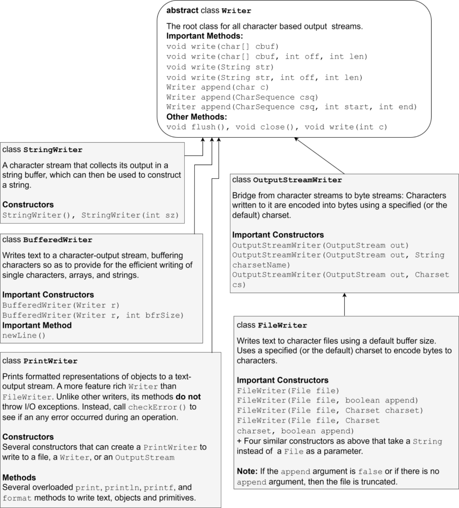

The following are a few points worth noting about the classes shown above:
-
ReaderandWriterare the root classes for all character based input and output streams respectively. They are abstract and they contain most of the methods that we normally use while dealing with low level character based input